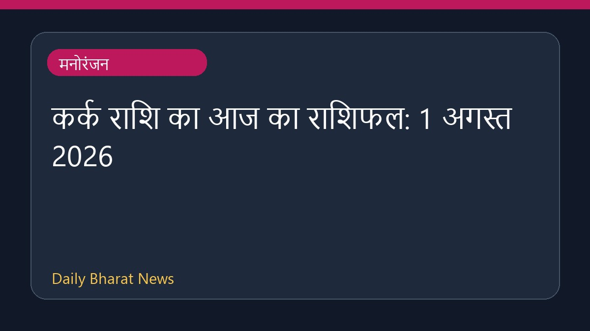

कर्क राशि का आज का राशिफल: 1 अगस्त 2026

1 अगस्त 2026 के लिए कर्क राशि का दैनिक राशिफल सामने आ गया है। इस संबंध में वोड इंडिया, द टाइम्स ऑफ इंडिया, आईडीिवा और मनीकंट्रोल जैसे विभिन्न प्रकाशनों पर भविष्यवाणियां साझा की गई हैं। जानकारी के अनुसार, इस दैनिक नाड़ी राशिफल में करियर, व्यवसाय और वित्त से जुड़े पूर्वानुमान बताए गए हैं। इसके अलावा, कुंभ राशि में चंद्रमा की स्थिति किसी छिपे हुए तथ्य को उजागर कर सकती है। सभी 12 राशि के जातकों के लिए आज का राशिफल उपलब्ध कराया गया है। हालांकि, इस विषय पर विस्तृत विवरण सीमित मात्रा में ही उपलब्ध हैं।
मूल स्रोत: Entertainment Sources
Cancer Horoscope Today: August 1, 2026 - Vogue India ↗
Cancer Horoscope Today: August 1, 2026 - Vogue India ↗